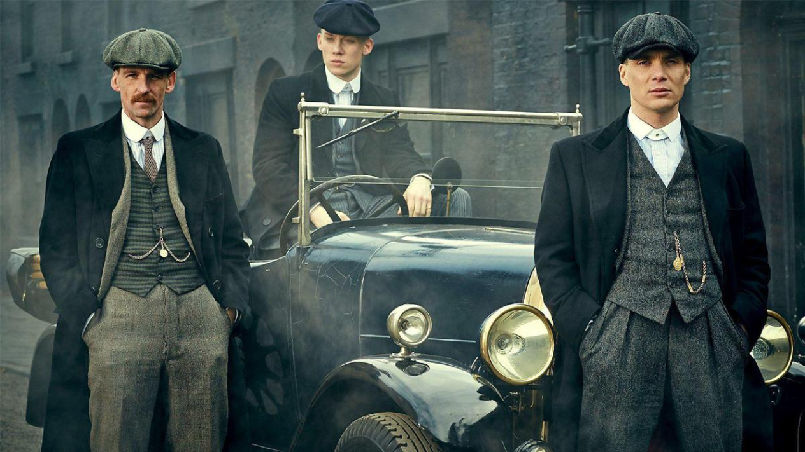

Peaky Blinders is a British crime drama television series created by Steven Knight. Set in Birmingham, England, it follows the exploits of the Peaky Blinders crime gang in the direct aftermath of the First World War. The fictional gang is loosely based on a real urban youth gang of the same name who were active in the city from the 1880s to the 1910s. It features an ensemble cast led by Cillian Murphy, starring as Tommy Shelby, Helen McCrory as Elizabeth "Polly" Gray, Paul Anderson as Arthur Shelby, Sophie Rundle as Ada Shelby and Joe Cole as John Shelby, the gang's senior members. Sam Neill, Annabelle Wallis, Iddo Goldberg, Tom Hardy, Charlotte Riley, Finn Cole, Natasha O'Keeffe, Paddy Considine, Adrien Brody, Aidan Gillen, Anya Taylor-Joy, Sam Claflin, Amber Anderson, James Frecheville and Stephen Graham are also starring. It premiered on 12 September 2013, telecast on BBC Two until the fourth series (with repeats on BBC Four), then moved to BBC One for the fifth and sixth series. Netflix, under a deal with Weinstein Company and Endemol, acquired the rights to release the show in the United States and around the world. In January 2021, it was announced that the sixth series would be the last, followed by a spinoff film. The final series was broadcast in 2022.
The fourth series begins on Christmas Eve 1925, with the Peaky Blinders getting word that the New York Mafia is coming to avenge the murders they committed the previous season and ends following the general strike of May 1926, with Tommy using Jessie Eden for information and being elected as a Member of Parliament in 1927. The fifth series begins two years later on 29 October 1929 (Black Tuesday) and ends on 7 December 1929, the morning after a rally led by British Union of Fascists leader Sir Oswald Mosley. The sixth series begins on 5 December 1933, as prohibition is repealed in the United States. The Nazi Party has also obtained power in Germany, leading to a growth in membership of the British Union of Fascists. Tommy must not only deal with Mosley but also with plots from the Irish Mob as well as the Anti-Treaty IRA.
The first series was filmed in Birmingham, Bradford, Dudley, Leeds, Liverpool, and Port Sunlight. Railway sequences were filmed between Keighley and Damems, using carriages from the Ingrow Museum of Rail Travel (owned by Vintage Carriages Trust), and carriages owned by the Lancashire and Yorkshire Railway Trust. Many of the scenes for the show were shot at the Black Country Living Museum. Steven Knight, Stephen Russell and Toby Finlay all had writing credits on the series. Ulster-born, New Zealand-raised Sam Neill enlisted the help of Northern Irish actors James Nesbitt and Liam Neeson to help him recover his lost Northern Irish accent for the role of C.I. Campbell. In the end, he had to tone down the accent since the series was marketed in the United States
A second series was commissioned shortly after the broadcast of the first and aired in October and November 2014. On 11 January 2014, auditions were held in Digbeth area of Birmingham (near where parts of the series are set) for white and mixed race teenage male extras, resulting in lengthy queues.
Shortly after the final episode of the second series, the show announced via its Twitter account that it had been renewed for a third series. On 5 October 2015, the official Peaky Blinders Twitter account announced that filming had begun for series 3. Filming completed on 22 January 2016, after 78 days of shooting.
During the initial broadcast of series 3, the BBC renewed Peaky Blinders for series 4 and 5, each of which comprises six episodes. Filming for series 4 started in March 2017 and premiered on 15 November 2017 on BBC Two. Both The Weinstein Company and its logo in its credits weren't included, even though the company was formerly involved in the US distribution of the series
The BBC commissioned a fifth series in mid-2016. On 22 August 2018, it was confirmed that series 5 would be broadcast on BBC One. Having already premiered to a select audience at Birmingham Town Hall on 18 July 2019, the series began airing on BBC One on 25 August 2019.
On 5 May 2018, Steven Knight told Birmingham Press Club that "we are definitely doing [series] six". Production on the series was due to begin in March 2020, but was delayed due to the COVID-19 pandemic. During 2020, rumours emerged linking comedian Rowan Atkinson to the show for the role of Adolf Hitler in series 6, but the producers denied the involvement saying that the news is "completely false". On 18 January 2021, it was announced that series six, which had just begun filming, would be the final television series of Peaky Blinders; though Knight revealed "the story will continue in another form". Helen McCrory, who played the character of Polly Gray, died in April 2021 and had been unable to film any scenes for the series. Series six premiered on 27 February 2022.
Following the announcement that the sixth series would be the last, Knight clarified that, following the year-long production hiatus in 2020, it had been decided to produce a feature length movie in place of a seventh television series, with other connected television series potentially following.
Peaky Blinders: Mastermind is a puzzle-adventure game, based on the multi-award-winning BBC and Netflix TV show. Out now on PlayStation 4.